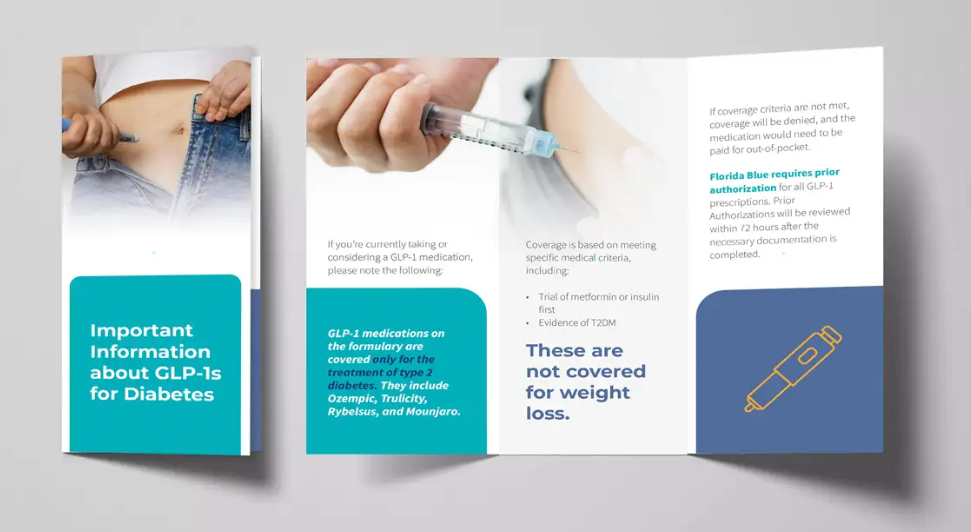

Impact
Clinical work that changed systems.
Five years of building programs, changing policies, and measuring what actually matters.
7 Health Plan Relationships
Relationship builder leading total cost of care and cost-offset model discussions across seven major health plans, with practice-side formulary education and prior authorization redesign.
GLP-1 Policy Development and Education
Developed member-facing GLP-1 education materials approved by payer and practice. Advocated for a change in coverage policy to ensure members receive therapeutically effective doses after an appropriate starting dose trial period.

$2M+ Pharmacy Utilization Management Program
Drove contract negotiations for GLP-1 prescription reduction goal. Achieved goal of 5% reduction in utilization with $2M+ saved in drug costs and improvements in payer-studied A1C cohort.
$236K Saved in Polypharmacy Outreach
Remaining 44% of Opportunity Addressed with Policy Change
Validated $236,152 in combined savings from October 2023 to March 2024 across 40 provider interventions, representing 56% of the total opportunity. Recognizing the remaining 44% was slipping through, I advocated upstream to embed the fix at the prior authorization level, addressing the gap before prescriptions are ever filled. The proactive process now captures what manual outreach could not.
Operational Oversight of 60+ Clinics
500K+ Members
Clinical protocols and educational resources deployed across 60+ Florida clinics, adopted as standard onboarding materials for all new providers and cross-functional teams across a 500,000+ member population, with continued expansion into the UnitedHealthcare market in Texas.
Clinical Protocol Development
Experienced with developing clinical protocols. Protocols developed were adopted as onboarding materials, used for provider education and feedback, and later expanded to additional markets including a partnership in Texas.
American Diabetes Association (ADA) Advocacy
I initiated correspondence with the American Diabetes Association to address polypharmacy using co-prescription of DPP-4 inhibitors and GLP-1 receptor agonists as a specific example of two drugs sharing overlapping mechanisms. The ADA had historically addressed appropriate initiation of therapies and guidance on managing duplication was notably absent. In 2026, following two attempts at outreach to the ADA, their Standards of Care included clear guidance on this therapeutic duplication. It validated my stance and was celebrated by physician leaders as the guideline-based recommendation they had asked for.
Reference
American Diabetes Association. Standards of Care in Diabetes — 2026.
Diabetes Care. 2026;49(Supplement 1):S183.
Section 9.18 — Pharmacologic Approaches to Glycemic Treatment
View Source →